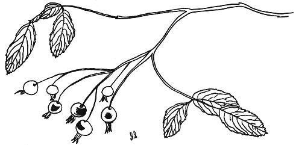
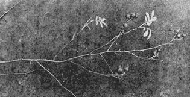
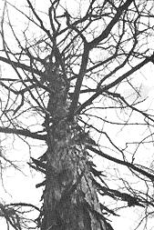
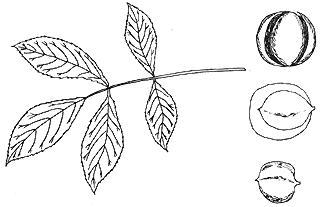
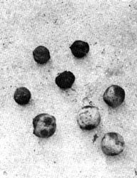
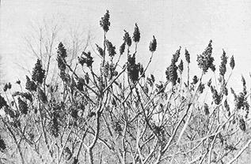
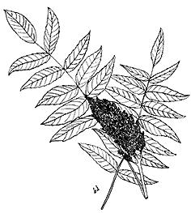
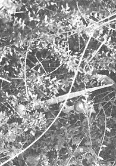
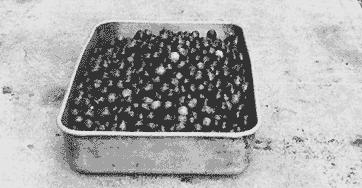

Food Without Farming No. 4
By James E. Churchill
January/February 1971
It is very late fall as I write this and the first flakes of snow have already fluttered to the ground in Northern Wisconsin. The wild plants that will yield food are getting scarcer . . . but we don't mind because our cellar of foraged fare is almost brimful now. For the next few weeks we'll devote most of our spare time to laying in the winter's supply of big and small game. Our luck with rod and reel will be good too as fish, sensing the approach of winter, are sure to feed madly during the next few weeks.
Still, we'll find an afternoon or two to gather four wild foods of the season: Rose hips, walnuts and hickory nuts, Staghorn sumac and cranberries.
Rose hips are the berries that form on the several different kinds of rose bushes that grow almost all over the world. These berries vary in size from the pea-sized hips of the Rosa Multiflora (Multiflora Rose) to the almost prune-sized berries of Rosa Rugesa, (Japanese Rose). Between these extremes are approximately 33 other varieties that bear hips. I find that, unlike other fruits, the biggest varieties of rose hips are the sweetest and, of course, the easiest to prepare. Rose hips have two characteristics that make them a very important wild food: (1) They cling to the rose bush all winter-even when the leaves have fallen and, indeed, even when the frost has sheared the thorns off the rose bush-and (2) They are perhaps the richest source of vitamin C of any well-known plant.
Two medium rose hips have as much vitamin C as an orange and three pounds of rose hips, uncooked, can contain enough vitamin C to last an adult for a year. Cooking the hips destroys some of the vitamins, of course, but no one should complain if the following recipes are used:
Wild rose jelly is best made after the first frost. Pick about a pound of rose hips. Cut off the blossom. Barely cover with water and simmer until the fruit is very soft. When tender, extract the juice with a jelly bag. Add a box of commercial pectin. Bring to a high boil and quickly add an amount of sugar equal to the amount of juice. Bring to a high boil and hold for one minute. Stir and skim. Pour into sterilized glass jars and cover with melted paraffin.
Rose hip syrup is used to cover steaming pancakes, french toast or hot biscuits at our place. It is made by picking a quart of rose hips, cutting the blossoms away from the hips, placing them in a saucepan and covering them with water. Boil until soft and strain the juice through a jelly bag. Return the hips to the saucepan, cover with water again and make a second juice extraction. After the second extraction add half as much sugar as juice. Boil until the mixture thickens enough to drip from a spoon. Pour into a sterilized, recycled corn syrup bottle and seal.
If you find, after trying, that you don't care for rose hip syrup or jelly try adding cinnamon or lemon juice to the product until it pleases your palate.
There are other ways to get the vitamin C from the hips. The simplest way probably is just to eat the hips outdoors right from the bushes when you're gathering other wild foods. Or, you can dry the hips, powder them and sprinkle the powder over any food you eat. As I write this I am eating a dish of acorn breakfast food sprinkled with a teaspoon of dried rose hips. They give a faint apple taste to the acorns.
In my opinion the easiest way to preserve rose hips is to dry them. Dried and packed in a clean container they will keep for months and drying is simplicity in itself. Pick the hips.
Cut the blossom away and split the hips in half. Place them on a flat pan and toast them in the oven at 200° until they are as crisp as popcorn. Never mind what you've read elsewhere about removing the seeds and just toasting the skin and pulp. Toast them seeds and all. The seeds contain plenty of vitamin C and they will roast to a delicious crispness. When I am done making rose hip syrup or jelly I press the skin and seeds into a thin wafer and dry this wafer in the oven as described before. This fruit is too good to go to waste.
For a change of pace, you can make tea from rose hips. Use one teaspoon of dried hips to a cup of boiling water. To get all the vitamins, though, you will have to swallow the "grounds."
At least six months of the year, a wild food forager will get as much vitamin C or ascorbic acid as his system requires from his daily diet and he can depend, if he wishes, on rose hips for the rest. This will probably take from three to four pounds of cooked hips and such an amount can very easily be found along fence rows, forest clearings and abandoned farmsteads.
Abandoned farmsteads and fence rows are also prime locations for walnuts and hickory nuts and perhaps we will gather them at the same time as we pick our vitamin C for the winter. Walnuts grow on large trees in rich soil throughout the more temperate regions of the Unites States and the black wale nut is probably the best known variety.
Black walnuts are enclosed in a thick, tough husk when they fall from the tree. This husk is green at first and turns black as it decays. The color of the husk, however, does not affect the nut contained in its center.
One of the first problems you'll encounter is separating the husk from the nut. If you're wearing stiff-soled shoes and the ground is hard under the tree you can sometimes grind the husk from the nut under your heel right there. More likely, though, you'll take the nuts home, husk and all.
When you get home, place each walnut on a hard surface and hit it with a hammer to break away the husk. At this point you may just as well hit it again and crack the nut. Of course, if you wish to store the whole walnut free of its husk you'll limit your hammer strokes accordingly.
Another way to remove the outside hull is to place the unhusked nuts in a narrow trough or boards and run over them with your car.
I saw one woodsman in southwestern Wisconsin husking walnuts with a wheel of his car which he had jacked up. Under the raised wheel was a hole dug in the ground slightly larger than the car tire and containing a considerable collection of unhusked and husked walnuts. The outdoorsman had a loose tire chain on the tire and when he ran the engine the chain slapped the walnuts with considerable authority. He said he could husk all he wanted this way in just a few minutes. I don't think the fellow had dug the hole under the tire either. Rather, he let the tire chain slap around until it scraped out the proper excavation. Off hand, I can't think of a better method of handling the job.
The walnut husks will stain your hands a dull brown which is impossible to remove so, if you must keep your hands "lily white", it might be a good idea to wear some gloves when you handle them. After you've shucked off the husks you can either store the nuts in a dry place or immediately use them in one of the following recipes:
Use an anvil, a hammer and a nut pick and crack a cup of walnut meats. Mix up a cake batter by combining two cups white flour with two teaspoons baking powder and one cup sugar. Blend in four tablespoons soft butter, 1/8 teaspoon salt and 3/4 cup milk or water. Beat very well and add the cup of walnut meats. Beat again until the meats are well coated. Place in a large pan and bake at 375° for 30 minutes.
Walnut brown sugar fudge is made by first cracking a pint of walnut meats. Set the nuts aside. Mix together two cups brown sugar, 1/8 teaspoon salt, 3/4 cup milk or water and five tablespoons rose hip syrup. Heat the mixture slowly to 238° or a "soft ball" stage (when a drop of the liquid in cool water will form a soft ball). Keep stirring this mixture, as it tends to burn. Remove from the fire and stir in four tablespoons butter or margarine. Cool slightly and beat the walnut meats into the fudge. Add one teaspoon vanilla, beat this in and set the finished product out to cool. Cut into squares and serve.
Hickory nuts can be substituted for walnuts in these and other recipes. For folks who aren't familiar with them, hickory trees are of the same family as the pecan and they are found in much the same regions as walnuts. Hickory nuts also grow inside husks and are found on trees that look as if they are losing their bark. Hence the name shell or shag bark hickory. The nuts fall earlier than walnuts and their husks usually break away, leaving the cleaned nuts lying under the tree.
If there are squirrels in your area they'll try their darndest to beat you to every hickory nut they can carry away and store. Sometimes they'll gather almost the entire crop. That happened to us this year. We have thirteen hickory trees on our homestead and every one dropped a good crop of nuts. Since we didn't pick up the nuts as they fell, the squirrels got all but about a peck of the several-bushel crop that matured.
Squirrels, therefore, can be royal pests if you like hickory nuts but you can also use their single-minded concentration to good advantage in hunting season. The bushytails won't be anywhere else if there's an ample stock of hickories available. And, since the greedy little critters generally stash away far more nuts than they can possibly use, you might even let them harvest a generous supply of hickory nuts for you.
One of these days I'll take the ladder and start probing hollow trees for the considerable cache of hickory nuts that has to be stored on our homestead. This tree probing is great sport and sometimes will yield a considerable return. I do it by tying a large nut-the threaded kind-to a fish line. I then coat the nut with axle grease and drop it down into hollow trees. When I feel it hit the bottom of the hollow, I bounce the weight up and down several times and then bring it up. If a hickory nut is stuck to the greasy threaded nut I try to determine how big a cache I've found by dropping the nut and retrieving it several times. Another way to explore hollows is to shine a flashlight into a small mirror that you have slanted into a hole.
If a discovered cache is big enough I drill a hole through the side of the tree near the bottom of the hollow and hook the nuts out with a bent wire. This drilled hole should be kept small enough so the tree isn't damaged.
When I've found enough nuts to last the winter I crack them and store them in glass jars. Hickory nuts are cracked by striking them on their narrowest sides so they split. The meats can be used as an addition to cakes, cookies or candies or they can be shelled and eaten like peanuts. For a special treat toast `em and eat `em hot.
Toasting is done by frying the hickory nuts in bubbling hot vegetable oil for five minutes. Remove them from the oil, salt well and toast in a medium oven for about ten minutes or until they start to crisp. You really won't want to believe how good this recipe is until you try it, especially with a glass of staghorn sumac "lemonade."
Staghorn sumac is found along roadsides, in forest openings and even in the middle of grassy meadows. It is shrub-like, seldom growing more than twenty feet tall. In early fall the elliptical leaves of this plant turn a brilliant red and are visable for miles on hillsides. Later the leaves fall and the red "horns" or fruit become visible. This fruit contains malic acid which can be used to produce a fine drink that tastes like lemonade with a hint of ginger.
Sumac-ade is made by covering a quantity of horns with water. Crush the horns in the water with a potato masher or similar tool and strain the juice through a tight cloth. Cool and sugar to taste.
I have tried staghorn sumac in early spring after the horns had clung to the bush through winter storms and spring rains and it still yielded a good drink. Therefore, I consider this a very important wild food. No need even to store it to keep it good all winter. Indeed, the frozen twigs are easier to break off then un
frozen ones.
Sumac juice can be substituted for lemon juice in most recipes. Just use about twice as much. A very good mock grape jelly can be made by mixing half sumac and half elderberry juice and processing as grape jelly.
Sumac pie is a great dessert for cold days and I make it to the following specifications: To 1-1 /4 cup sumac juice add 1 /3 cup sugar, dash of salt and two tablespoons butter. Place in a double-boiler and add four tablespoons cornstarch dissolved in a little water. Cook until the mixture thickens and add two slightly beaten egg yolks. Cook again, stirring constantly, for two minutes. Remove and place in a single pie shell. Cool and serve.
Sometimes when you're foraging for sumac you'll cross a marsh. If this marsh is of the boggy variety-with willows, green or yellow moss and small plants such as leatherleaf-there is a good chance it will contain cranberries.
Cranberries grow wild all over Wisconsin and, in the west central Wisconsin that I originally came from, raising domestic cranberries is a considerable industry.
There are so many good recipes for cranberries that they fill entire cookbooks. Some of our family favorites for generations are cranberry relish, cranberry pie, cranberry sauce and cranberry bread.
Cranberry relish is so good it has definite commercial possibilities. It is made by grinding together four cups cranberries, one apple and one orange. Then add one cup sugar. That's all, but keep refrigerated for best results.
Cranberry pie tastes something like cherry pie and it is made by mixing four cups chopped cranberries, 1-1/2 cups sugar, three tablespoons flour and one cup of cream. Mix well and place in a double crust. Bake at 375° for 25 minutes. Then lower to 350° and bake for 15 minutes.
Cranberry sauce makes any wild meat taste better. Make it by mixing four cups of cranberries with two cups sugar and adding two cups water. Boil until the berries break, about ten minutes.
Cranberry bread is an unusual treat that is made of two cups cranberries, two cups flour, four tablespoons shortening, two eggs, one cup milk, four tablespoons baking powder and one teaspoon salt. Mix very well and bake at 350° for 45 to 50 minutes. Serve hot or cold.
Cranberries are easy to store. I understand they will keep in sterilized jars just covered with water. The early New Englanders sent barrels of cranberries back to England and they kept very well on the long, slow voyage.
Country people in Wisconsin often set the berries in a wooden box on a porch where they will keep cool and use the fruit as they wish all winter. When spring comes and the weather turns warm they can what is left by placing the cranberries in a saucepan over a fire and cooking them for ten minutes. The cooked berries are poured straight from the pan into sterilized jars and sealed.
If you have limited space perhaps drying your cranberries would be the best preservation method. Just place them in a 250° oven until the berries powder between the fingers. To use, boil until the powder turns to liquid.
One of the most valuable products of the cranberries is the juice. It contains a plentiful supply of vitamin A and many other vitamins and minerals. We make juice by cooking washed cranberries until they pop and straining the mass through a jelly bag. Use the pulp left in the bag for cranberry jelly. Simply combine four cups of pulp with three cups of sugar. Add 1/2 cup cold water. Cook three minutes and press through a sieve to remove the tough skins. Place pulp in wide mouthed container and let it harden. Serve with meat or fish.
Cranberries that are left on the vine will be good all winter if you can find them under the snow. They'll still be good after the snow has melted in the spring and some wild marshes are lined with red berries after the melting snow fills them with water. The berries which have broken loose from the vines during the winter will float to the edges and I have scooped quarts of them out in April and used them for cooked cranberries or cranberry juice.
Next issue I'll have more wild foods. Meanwhile, happy foraging.
 Rose hips in line detail |
 Rose hips as you'll find them. |
 Shellbark Hickory. |
|
 Line drawing of walnuts. |
 Husked and unhusked walnuts. |
 Staghorn Sumac |
|
 Staghorn sumac in detail. |
 Cranberries |
 Good eatin'! |
|
 |
 |
|